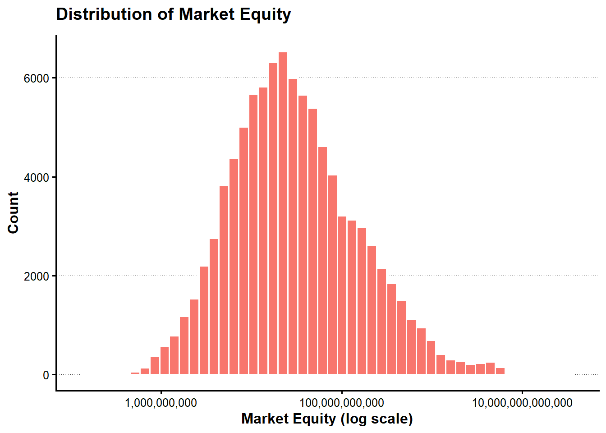
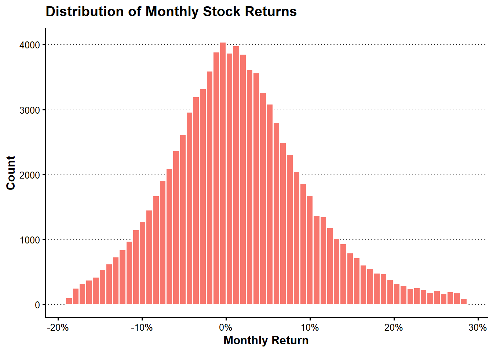
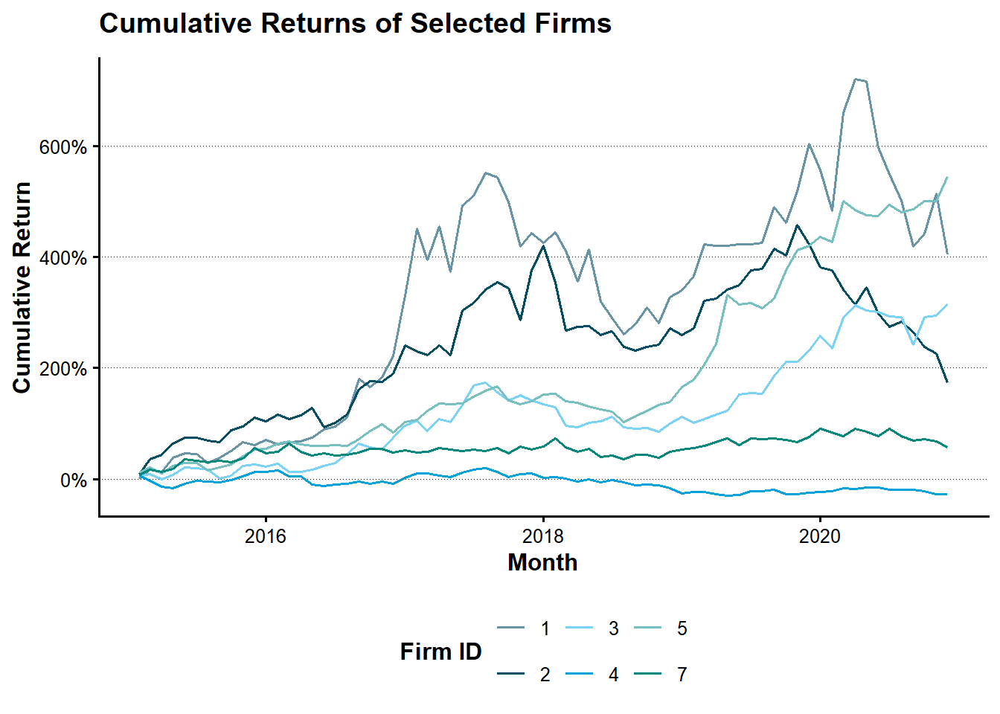
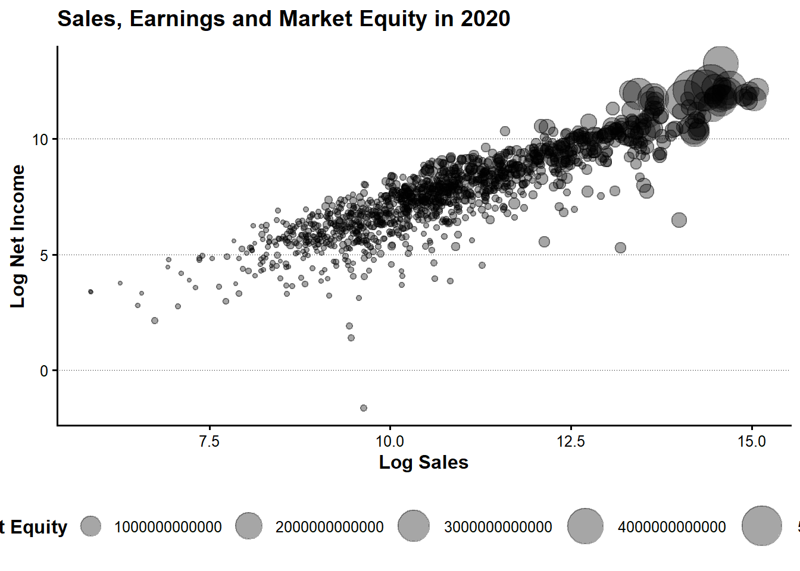
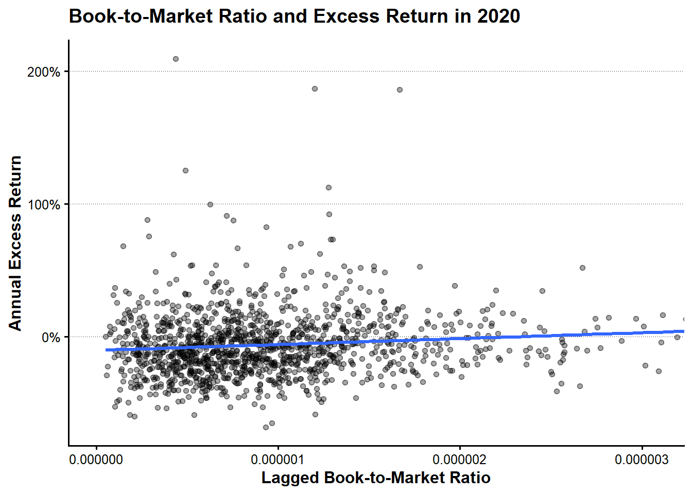

stock_data_raw <-
read_parquet_file_LFL(
file.path(
"raw",
"market",
"stock_prices_and_returns.parquet"
)
)
show_table_LFL(stock_data_raw, n = 10)
#> # A tibble: 95,040 × 9
#> year month mon_ID fir_ID sto_price DPS sha_outst adj_coeff R_F
#> * <dbl> <dbl> <dbl> <dbl> <dbl> <dbl> <dbl> <dbl> <dbl>
#> 1 2015 1 1 1 954 0 2422000 1 0.00065068
#> 2 2015 2 2 1 960 0 2422000 1 0.00058341
#> 3 2015 3 3 1 1113 0 2422000 1 0.00061144
#> 4 2015 4 4 1 1081 0 2422000 1 0.00068482
#> 5 2015 5 5 1 1317 0 2422000 1 0.00073677
#> 6 2015 6 6 1 1366 29 2422000 1 0.00069540
#> 7 2015 7 7 1 1353 0 2422000 1 0.00049354
#> 8 2015 8 8 1 1209 0 2422000 1 0.00047106
#> 9 2015 9 9 1 1291 0 2422000 1 0.00055242
#> 10 2015 10 10 1 1407 0 2422000 1 0.00063803
#> # ℹ 95,030 more rows第I-3章 株式データと時系列分析
本章では、月次株式データから株式リターン、超過リターンおよび時価総額を作成し、第2章で整理した年次財務データと結合する。さらに、月次リターンの分布、累積リターン、年次リターンおよび簿価時価比率との関係を確認し、第4章以降で利用する分析用データを保存する。
I-3.1 分析環境
I-3.2 株式データの読込みと整備
I-3.2.1 株式データの読込み
本章の計算に必要な列がすべて存在することを確認する。
required_stock_columns <- c(
"year",
"month",
"month_ID",
"firm_ID",
"stock_price",
"shares_outstanding",
"DPS",
"adjustment_coefficient",
"R_F"
)
missing_stock_columns <-
setdiff(required_stock_columns, names(stock_data_raw))
if (length(missing_stock_columns) > 0) {
stop(
"株式データに必要な列が不足しています: ",
paste(missing_stock_columns, collapse = ", "),
call. = FALSE
)
}I-3.2.2 データ構造と欠損値
show_data_structure_LFL(stock_data_raw)
#> Rows: 95,040
#> Columns: 9
#> $ year <dbl> 2015, 2015, 2015, 2015, 2015, 2015, 2015, 2015,…
#> $ month <dbl> 1, 2, 3, 4, 5, 6, 7, 8, 9, 10, 11, 12, 1, 2, 3,…
#> $ month_ID <dbl> 1, 2, 3, 4, 5, 6, 7, 8, 9, 10, 11, 12, 13, 14, …
#> $ firm_ID <dbl> 1, 1, 1, 1, 1, 1, 1, 1, 1, 1, 1, 1, 1, 1, 1, 1,…
#> $ stock_price <dbl> 954, 960, 1113, 1081, 1317, 1366, 1353, 1209, 1…
#> $ DPS <dbl> 0, 0, 0, 0, 0, 29, 0, 0, 0, 0, 0, 29, 0, 0, 0, …
#> $ shares_outstanding <dbl> 2422000, 2422000, 2422000, 2422000, 2422000, 24…
#> $ adjustment_coefficient <dbl> 1, 1, 1, 1, 1, 1, 1, 1, 1, 1, 1, 1, 1, 1, 1, 1,…
#> $ R_F <dbl> 0.00065068255, 0.00058340985, 0.00061144232, 0.…
stock_data_overview <- stock_data_raw |>
summarise(
observations = n(),
variables = ncol(stock_data_raw),
firms = n_distinct(firm_ID),
first_year = min(year, na.rm = TRUE),
last_year = max(year, na.rm = TRUE),
first_month_ID = min(month_ID, na.rm = TRUE),
last_month_ID = max(month_ID, na.rm = TRUE)
)
show_table_LFL(stock_data_overview)
#> # A tibble: 1 × 7
#> observations variables firms fir_year las_year fir_ID las_ID
#> <int> <int> <int> <dbl> <dbl> <dbl> <dbl>
#> 1 95040 9 1515 2015 2020 1 72stock_missing_summary <- stock_data_raw |>
summarise(
across(
everything(),
list(
missing = \(x) sum(is.na(x)),
missing_rate = \(x) mean(is.na(x))
),
.names = "{.col}__{.fn}"
)
) |>
pivot_longer(
cols = everything(),
names_to = c("variable", ".value"),
names_sep = "__"
) |>
arrange(desc(missing_rate), variable)
show_table_LFL(
stock_missing_summary,
n = nrow(stock_missing_summary)
)
#> # A tibble: 9 × 3
#> variable missing mis_rate
#> <chr> <int> <dbl>
#> 1 DPS 0 0
#> 2 R_F 0 0
#> 3 adjustment_coefficient 0 0
#> 4 firm_ID 0 0
#> 5 month 0 0
#> 6 month_ID 0 0
#> 7 shares_outstanding 0 0
#> 8 stock_price 0 0
#> 9 year 0 0I-3.2.3 データ型とパネルキー
企業ごとの時系列計算を正しく行うため、企業IDと月IDの順に並べる。
stock_data <- stock_data_raw |>
mutate(
firm_ID = as.integer(firm_ID),
year = as.integer(year),
month = as.integer(month),
month_ID = as.integer(month_ID),
month_date = lubridate::make_date(year, month, 1)
) |>
arrange(firm_ID, month_ID)
show_data_structure_LFL(stock_data)
#> Rows: 95,040
#> Columns: 10
#> $ year <int> 2015, 2015, 2015, 2015, 2015, 2015, 2015, 2015,…
#> $ month <int> 1, 2, 3, 4, 5, 6, 7, 8, 9, 10, 11, 12, 1, 2, 3,…
#> $ month_ID <int> 1, 2, 3, 4, 5, 6, 7, 8, 9, 10, 11, 12, 13, 14, …
#> $ firm_ID <int> 1, 1, 1, 1, 1, 1, 1, 1, 1, 1, 1, 1, 1, 1, 1, 1,…
#> $ stock_price <dbl> 954, 960, 1113, 1081, 1317, 1366, 1353, 1209, 1…
#> $ DPS <dbl> 0, 0, 0, 0, 0, 29, 0, 0, 0, 0, 0, 29, 0, 0, 0, …
#> $ shares_outstanding <dbl> 2422000, 2422000, 2422000, 2422000, 2422000, 24…
#> $ adjustment_coefficient <dbl> 1, 1, 1, 1, 1, 1, 1, 1, 1, 1, 1, 1, 1, 1, 1, 1,…
#> $ R_F <dbl> 0.00065068255, 0.00058340985, 0.00061144232, 0.…
#> $ month_date <date> 2015-01-01, 2015-02-01, 2015-03-01, 2015-04-01…firm_IDとmonth_IDの組合せが一意であることを確認する。
stock_key_duplicates <- stock_data |>
count(
firm_ID,
month_ID,
name = "observations"
) |>
filter(observations > 1)
show_table_LFL(stock_key_duplicates)
#> # A tibble: 0 × 3
#> # ℹ 3 variables: fir_ID <int>, mon_ID <int>, observations <int>if (nrow(stock_key_duplicates) > 0) {
stop(
"firm_IDとmonth_IDの組合せに重複があります。",
call. = FALSE
)
}同じ月IDに複数の年月が対応していないことも確認する。
month_calendar_check <- stock_data |>
distinct(
month_ID,
year,
month,
month_date
) |>
count(
month_ID,
name = "calendar_rows"
) |>
filter(calendar_rows > 1)
show_table_LFL(month_calendar_check)
#> # A tibble: 0 × 2
#> # ℹ 2 variables: mon_ID <int>, cal_rows <int>
if (nrow(month_calendar_check) > 0) {
stop(
"同じmonth_IDに複数の年月が対応しています。",
call. = FALSE
)
}年度別の企業数と観測数を確認する。
stock_observations_by_year <- stock_data |>
group_by(year) |>
summarise(
firms = n_distinct(firm_ID),
observations = n(),
first_month_ID = min(month_ID),
last_month_ID = max(month_ID),
.groups = "drop"
) |>
arrange(year)
show_table_LFL(
stock_observations_by_year,
n = nrow(stock_observations_by_year)
)
#> # A tibble: 6 × 5
#> year firms observations fir_ID las_ID
#> <int> <int> <int> <int> <int>
#> 1 2015 1266 15192 1 12
#> 2 2016 1293 15516 13 24
#> 3 2017 1319 15828 25 36
#> 4 2018 1323 15876 37 48
#> 5 2019 1356 16272 49 60
#> 6 2020 1363 16356 61 72I-3.3 月次リターンと時価総額
I-3.3.1 配当と調整係数
配当が支払われた観測と、調整係数が1と異なる観測を確認する。
dividend_observations <- stock_data |>
filter(
!is.na(DPS),
DPS != 0
) |>
select(
firm_ID,
year,
month,
month_ID,
stock_price,
DPS,
adjustment_coefficient
) |>
arrange(firm_ID, month_ID)
adjustment_observations <- stock_data |>
filter(
!is.na(adjustment_coefficient),
!near(adjustment_coefficient, 1)
) |>
select(
firm_ID,
year,
month,
month_ID,
stock_price,
DPS,
adjustment_coefficient
) |>
arrange(firm_ID, month_ID)
corporate_action_summary <- stock_data |>
summarise(
observations = n(),
dividend_observations =
sum(!is.na(DPS) & DPS != 0),
adjusted_observations =
sum(
!is.na(adjustment_coefficient) &
!near(adjustment_coefficient, 1)
)
)
show_table_LFL(dividend_observations, n = 20)
#> # A tibble: 14,250 × 7
#> fir_ID year month mon_ID sto_price DPS adj_coeff
#> <int> <int> <int> <int> <dbl> <dbl> <dbl>
#> 1 1 2015 6 6 1366 29 1
#> 2 1 2015 12 12 1477 29 1
#> 3 1 2016 6 18 1696 40 1
#> 4 1 2016 12 24 2842 40 1
#> 5 1 2017 6 30 4317 43 1
#> 6 1 2017 12 36 3915 43 1
#> 7 1 2018 6 42 2986 43 1
#> 8 1 2018 12 48 2992 43 1
#> 9 1 2019 6 54 3608 53 1
#> 10 1 2019 12 60 4803 53 1
#> 11 1 2020 6 66 4698 56 1
#> 12 1 2020 12 72 3341 56 1
#> 13 2 2015 6 6 2167 3 1
#> 14 2 2015 12 12 2613 3 1
#> 15 2 2016 6 18 2395 7 1
#> 16 2 2016 12 24 3576 7 1
#> 17 2 2017 6 30 4966 7 1
#> 18 2 2017 12 36 5852 7 1
#> 19 2 2018 6 42 4415 12 1
#> 20 2 2018 12 48 4542 12 1
#> # ℹ 14,230 more rows
show_table_LFL(adjustment_observations, n = 20)
#> # A tibble: 267 × 7
#> fir_ID year month mon_ID sto_price DPS adj_coeff
#> <int> <int> <int> <int> <dbl> <dbl> <dbl>
#> 1 1 2017 4 28 4082 0 1.2
#> 2 9 2015 4 4 2655 0 1.2
#> 3 10 2015 2 2 757 0 1.2
#> 4 21 2019 12 60 3008 19 1.1
#> 5 27 2019 9 57 13750 0 0.1
#> 6 42 2016 5 17 47324 0 0.1
#> 7 48 2019 2 50 13232 0 0.1
#> 8 53 2019 4 52 1754 0 1.1
#> 9 54 2019 2 50 4015 0 1.1
#> 10 60 2019 12 60 1749 0 1.1
#> 11 66 2019 11 59 10140 0 0.1
#> 12 67 2018 1 37 2020 0 1.1
#> 13 72 2016 5 17 1876 0 1.1
#> 14 74 2017 6 30 1402 11 2
#> 15 80 2018 3 39 1393 0 1.2
#> 16 84 2017 4 28 10697 0 0.1
#> 17 90 2020 2 62 153396 0 0.1
#> 18 96 2015 4 4 805 0 1.2
#> 19 103 2020 6 66 44488 468 0.1
#> 20 104 2016 1 13 9191 0 0.1
#> # ℹ 247 more rows
show_table_LFL(corporate_action_summary)
#> # A tibble: 1 × 3
#> observations div_obser adj_obser
#> <int> <int> <int>
#> 1 95040 14250 267I-3.3.2 時価総額
企業\(i\)の月\(t\)における時価総額\(ME_{i,t}\)は、株価\(P_{i,t}\)と発行済株式数\(N_{i,t}\)の積である。
\[ ME_{i,t}=P_{i,t}N_{i,t} \]
stock_data <- stock_data |>
mutate(
ME = stock_price * shares_outstanding,
ME = if_else(
is.finite(ME) & ME > 0,
ME,
NA_real_
)
)
stock_data |>
select(
firm_ID,
month_date,
stock_price,
shares_outstanding,
ME
) |>
slice_head(n = 10) |>
show_table_LFL(n = 10)
#> # A tibble: 10 × 5
#> fir_ID mon_date sto_price sha_outst ME
#> <int> <date> <dbl> <dbl> <dbl>
#> 1 1 2015-01-01 954 2422000 2310588000
#> 2 1 2015-02-01 960 2422000 2325120000
#> 3 1 2015-03-01 1113 2422000 2695686000
#> 4 1 2015-04-01 1081 2422000 2618182000
#> 5 1 2015-05-01 1317 2422000 3189774000
#> 6 1 2015-06-01 1366 2422000 3308452000
#> 7 1 2015-07-01 1353 2422000 3276966000
#> 8 1 2015-08-01 1209 2422000 2928198000
#> 9 1 2015-09-01 1291 2422000 3126802000
#> 10 1 2015-10-01 1407 2422000 3407754000p_market_equity <- stock_data |>
filter(
is.finite(ME),
ME > 0
) |>
ggplot(aes(x = ME, fill = "Market Equity")) +
geom_histogram(
bins = 50,
colour = "white",
show.legend = FALSE
) +
scale_x_log10(
labels = scales::label_comma()
) +
labs(
x = "Market Equity (log scale)",
y = "Count",
title = "Distribution of Market Equity"
)
add_lagrange_theme_LFL(p_market_equity)
I-3.3.3 月次株式リターン
企業ごとに前月株価を作成し、月IDが連続している場合だけ利用する。
stock_data <- stock_data |>
group_by(firm_ID) |>
arrange(month_ID, .by_group = TRUE) |>
mutate(
lagged_stock_price = lag(stock_price),
lagged_month_ID = lag(month_ID),
consecutive_month =
month_ID - lagged_month_ID == 1L,
lagged_stock_price = if_else(
consecutive_month,
lagged_stock_price,
NA_real_
)
) |>
ungroup()月次株式リターン\(R_{i,t}\)を、株価、配当および調整係数から計算する。
\[ R_{i,t} = \frac{ (P_{i,t}+D_{i,t})A_{i,t}-P_{i,t-1} }{ P_{i,t-1} } \]
stock_data <- stock_data |>
mutate(
R = case_when(
is.na(lagged_stock_price) ~ NA_real_,
lagged_stock_price <= 0 ~ NA_real_,
is.na(stock_price) ~ NA_real_,
is.na(DPS) ~ NA_real_,
is.na(adjustment_coefficient) ~ NA_real_,
TRUE ~ (
(stock_price + DPS) *
adjustment_coefficient -
lagged_stock_price
) / lagged_stock_price
),
R = if_else(
is.finite(R),
R,
NA_real_
)
)
stock_data |>
select(
firm_ID,
month_date,
lagged_stock_price,
stock_price,
DPS,
adjustment_coefficient,
R
) |>
filter(!is.na(R)) |>
slice_head(n = 15) |>
show_table_LFL(n = 15)
#> # A tibble: 15 × 7
#> fir_ID mon_date lag_price sto_price DPS adj_coeff R
#> <int> <date> <dbl> <dbl> <dbl> <dbl> <dbl>
#> 1 1 2015-02-01 954 960 0 1 0.0062893
#> 2 1 2015-03-01 960 1113 0 1 0.15937
#> 3 1 2015-04-01 1113 1081 0 1 -0.028751
#> 4 1 2015-05-01 1081 1317 0 1 0.21832
#> 5 1 2015-06-01 1317 1366 29 1 0.059226
#> 6 1 2015-07-01 1366 1353 0 1 -0.0095168
#> 7 1 2015-08-01 1353 1209 0 1 -0.10643
#> 8 1 2015-09-01 1209 1291 0 1 0.067825
#> 9 1 2015-10-01 1291 1407 0 1 0.089853
#> 10 1 2015-11-01 1407 1562 0 1 0.11016
#> 11 1 2015-12-01 1562 1477 29 1 -0.035851
#> 12 1 2016-01-01 1477 1561 0 1 0.056872
#> 13 1 2016-02-01 1561 1487 0 1 -0.047406
#> 14 1 2016-03-01 1487 1526 0 1 0.026227
#> 15 1 2016-04-01 1526 1542 0 1 0.010485I-3.3.4 無リスク金利と超過リターン
同じ月の無リスク金利はすべての企業に共通であることを確認し、月ごとの中央値で統一する。
risk_free_rate_by_month <- stock_data |>
group_by(
month_ID,
year,
month,
month_date
) |>
summarise(
observations = n(),
valid_rates = sum(is.finite(R_F)),
distinct_rates =
n_distinct(R_F[is.finite(R_F)]),
R_F_month = {
values <- R_F[is.finite(R_F)]
if (length(values) == 0) {
NA_real_
} else {
median(values)
}
},
.groups = "drop"
) |>
arrange(month_ID)
risk_free_rate_diagnostics <-
risk_free_rate_by_month |>
filter(distinct_rates > 1)
show_table_LFL(
risk_free_rate_diagnostics,
n = nrow(risk_free_rate_diagnostics)
)
#> # A tibble: 72 × 8
#> mon_ID year month mon_date observations val_rates dis_rates R_month
#> <int> <int> <int> <date> <int> <int> <int> <dbl>
#> 1 1 2015 1 2015-01-01 1266 1266 83 0.000082029
#> 2 2 2015 2 2015-02-01 1266 1266 83 0.000082029
#> 3 3 2015 3 2015-03-01 1266 1266 83 0.000082029
#> 4 4 2015 4 2015-04-01 1266 1266 83 0.000082029
#> 5 5 2015 5 2015-05-01 1266 1266 83 0.000082029
#> 6 6 2015 6 2015-06-01 1266 1266 83 0.000082029
#> 7 7 2015 7 2015-07-01 1266 1266 83 0.000082029
#> 8 8 2015 8 2015-08-01 1266 1266 83 0.000082029
#> 9 9 2015 9 2015-09-01 1266 1266 83 0.000082029
#> 10 10 2015 10 2015-10-01 1266 1266 83 0.000082029
#> 11 11 2015 11 2015-11-01 1266 1266 83 0.000082029
#> 12 12 2015 12 2015-12-01 1266 1266 83 0.000082029
#> 13 13 2016 1 2016-01-01 1293 1293 83 0.000082029
#> 14 14 2016 2 2016-02-01 1293 1293 83 0.000075959
#> 15 15 2016 3 2016-03-01 1293 1293 83 0.000075959
#> 16 16 2016 4 2016-04-01 1293 1293 83 0.000082029
#> 17 17 2016 5 2016-05-01 1293 1293 83 0.000082029
#> 18 18 2016 6 2016-06-01 1293 1293 83 0.000082029
#> 19 19 2016 7 2016-07-01 1293 1293 83 0.000082029
#> 20 20 2016 8 2016-08-01 1293 1293 83 0.000082029
#> 21 21 2016 9 2016-09-01 1293 1293 83 0.000082029
#> 22 22 2016 10 2016-10-01 1293 1293 83 0.000075959
#> 23 23 2016 11 2016-11-01 1293 1293 83 0.000075959
#> 24 24 2016 12 2016-12-01 1293 1293 83 0.000075959
#> 25 25 2017 1 2017-01-01 1319 1319 83 0.000075959
#> 26 26 2017 2 2017-02-01 1319 1319 83 0.000075959
#> 27 27 2017 3 2017-03-01 1319 1319 83 0.000075959
#> 28 28 2017 4 2017-04-01 1319 1319 83 0.000082029
#> 29 29 2017 5 2017-05-01 1319 1319 83 0.000075959
#> 30 30 2017 6 2017-06-01 1319 1319 83 0.000075959
#> 31 31 2017 7 2017-07-01 1319 1319 83 0.000075959
#> 32 32 2017 8 2017-08-01 1319 1319 83 0.000075959
#> 33 33 2017 9 2017-09-01 1319 1319 83 0.000075959
#> 34 34 2017 10 2017-10-01 1319 1319 83 0.000075959
#> 35 35 2017 11 2017-11-01 1319 1319 83 0.000075959
#> 36 36 2017 12 2017-12-01 1319 1319 83 0.000075959
#> 37 37 2018 1 2018-01-01 1323 1323 83 0.000075959
#> 38 38 2018 2 2018-02-01 1323 1323 83 0.000075959
#> 39 39 2018 3 2018-03-01 1323 1323 83 0.000082029
#> 40 40 2018 4 2018-04-01 1323 1323 83 0.000082029
#> 41 41 2018 5 2018-05-01 1323 1323 83 0.000082029
#> 42 42 2018 6 2018-06-01 1323 1323 83 0.000075959
#> 43 43 2018 7 2018-07-01 1323 1323 83 0.000075959
#> 44 44 2018 8 2018-08-01 1323 1323 83 0.000082029
#> 45 45 2018 9 2018-09-01 1323 1323 83 0.000082029
#> 46 46 2018 10 2018-10-01 1323 1323 83 0.000082029
#> 47 47 2018 11 2018-11-01 1323 1323 83 0.000082029
#> 48 48 2018 12 2018-12-01 1323 1323 83 0.000082029
#> 49 49 2019 1 2019-01-01 1356 1356 83 0.000075959
#> 50 50 2019 2 2019-02-01 1356 1356 83 0.000078994
#> 51 51 2019 3 2019-03-01 1356 1356 83 0.000082029
#> 52 52 2019 4 2019-04-01 1356 1356 83 0.000082029
#> 53 53 2019 5 2019-05-01 1356 1356 83 0.000082029
#> 54 54 2019 6 2019-06-01 1356 1356 83 0.000075959
#> 55 55 2019 7 2019-07-01 1356 1356 83 0.000082029
#> 56 56 2019 8 2019-08-01 1356 1356 83 0.000082029
#> 57 57 2019 9 2019-09-01 1356 1356 83 0.000082029
#> 58 58 2019 10 2019-10-01 1356 1356 83 0.000075959
#> 59 59 2019 11 2019-11-01 1356 1356 83 0.000075959
#> 60 60 2019 12 2019-12-01 1356 1356 83 0.000075959
#> 61 61 2020 1 2020-01-01 1363 1363 83 0.000082029
#> 62 62 2020 2 2020-02-01 1363 1363 83 0.000082029
#> 63 63 2020 3 2020-03-01 1363 1363 83 0.000082029
#> 64 64 2020 4 2020-04-01 1363 1363 83 0.000075959
#> 65 65 2020 5 2020-05-01 1363 1363 83 0.000075959
#> 66 66 2020 6 2020-06-01 1363 1363 83 0.000075959
#> 67 67 2020 7 2020-07-01 1363 1363 83 0.000075959
#> 68 68 2020 8 2020-08-01 1363 1363 83 0.000075959
#> 69 69 2020 9 2020-09-01 1363 1363 83 0.000075959
#> 70 70 2020 10 2020-10-01 1363 1363 83 0.000082029
#> 71 71 2020 11 2020-11-01 1363 1363 83 0.000082029
#> 72 72 2020 12 2020-12-01 1363 1363 83 0.000082029
stock_data <- stock_data |>
select(-R_F) |>
left_join(
risk_free_rate_by_month |>
select(
month_ID,
R_F = R_F_month
),
by = "month_ID"
)
missing_monthly_risk_free_rate <- stock_data |>
distinct(month_ID, R_F) |>
filter(!is.finite(R_F))
if (nrow(missing_monthly_risk_free_rate) > 0) {
stop(
"月次無リスク金利を作成できないmonth_IDがあります。",
call. = FALSE
)
}月次超過リターン\(R^e_{i,t}\)は、株式リターンから無リスク金利を差し引いて計算する。
\[ R^e_{i,t}=R_{i,t}-R_{F,t} \]
stock_data <- stock_data |>
mutate(
Re = R - R_F,
Re = if_else(
is.finite(Re),
Re,
NA_real_
)
)I-3.4 月次リターンの分析
I-3.4.1 要約統計量
calculate_skewness_LFL <- function(x) {
values <- x[is.finite(x)]
if (
length(values) < 3 ||
near(sd(values), 0)
) {
return(NA_real_)
}
mean(
((values - mean(values)) /
sd(values))^3
)
}
calculate_kurtosis_LFL <- function(x) {
values <- x[is.finite(x)]
if (
length(values) < 4 ||
near(sd(values), 0)
) {
return(NA_real_)
}
mean(
((values - mean(values)) /
sd(values))^4
)
}monthly_return_summary <- stock_data |>
select(R, Re) |>
pivot_longer(
cols = everything(),
names_to = "return_type",
values_to = "return"
) |>
filter(is.finite(return)) |>
group_by(return_type) |>
summarise(
observations = n(),
mean = mean(return),
median = median(return),
standard_deviation = sd(return),
minimum = min(return),
first_quartile = quantile(return, 0.25),
third_quartile = quantile(return, 0.75),
maximum = max(return),
skewness = calculate_skewness_LFL(return),
kurtosis = calculate_kurtosis_LFL(return),
.groups = "drop"
)
show_table_LFL(monthly_return_summary)
#> # A tibble: 2 × 11
#> ret_type observations mean median sta_devia minimum fir_quart thi_quart
#> <chr> <int> <dbl> <dbl> <dbl> <dbl> <dbl> <dbl>
#> 1 R 93525 0.015859 0.010332 0.091131 -0.38028 -0.040573 0.064808
#> 2 Re 93525 0.015779 0.010252 0.091131 -0.38036 -0.040652 0.064730
#> # ℹ 3 more variables: maximum <dbl>, skewness <dbl>, kurtosis <dbl>I-3.4.2 リターン分布
極端値の影響を抑えるため、1パーセンタイルから99パーセンタイルまでを表示する。
monthly_return_limits <- quantile(
stock_data$R,
probs = c(0.01, 0.99),
na.rm = TRUE
)
p_monthly_return_distribution <- stock_data |>
filter(
is.finite(R),
between(
R,
monthly_return_limits[[1]],
monthly_return_limits[[2]]
)
) |>
ggplot(aes(x = R, fill = "Monthly Return")) +
geom_histogram(
bins = 60,
colour = "white",
show.legend = FALSE
) +
scale_x_continuous(
labels = scales::label_percent()
) +
labs(
x = "Monthly Return",
y = "Count",
title = "Distribution of Monthly Stock Returns"
)
add_lagrange_theme_LFL(
p_monthly_return_distribution
)
I-3.4.3 企業別の累積リターン
観測数が多い企業から6社を選び、月次リターンを複利で累積する。
sample_firm_ids <- stock_data |>
filter(is.finite(R)) |>
count(
firm_ID,
sort = TRUE
) |>
slice_head(n = 6) |>
pull(firm_ID)
cumulative_return_data <- stock_data |>
filter(
firm_ID %in% sample_firm_ids,
is.finite(R)
) |>
group_by(firm_ID) |>
arrange(month_ID, .by_group = TRUE) |>
mutate(
cumulative_return = cumprod(1 + R) - 1
) |>
ungroup()p_cumulative_return <- cumulative_return_data |>
ggplot(
aes(
x = month_date,
y = cumulative_return,
colour = factor(firm_ID)
)
) +
geom_line(linewidth = 0.7) +
scale_y_continuous(
labels = scales::label_percent()
) +
labs(
x = "Month",
y = "Cumulative Return",
colour = "Firm ID",
title = "Cumulative Returns of Selected Firms"
)
add_lagrange_theme_LFL(p_cumulative_return) +
ggthemes::scale_colour_economist()
I-3.4.4 企業別の要約統計量
firm_return_summary <- sample_firm_ids |>
map_dfr(
\(firm_id) {
firm_returns <- stock_data |>
filter(
firm_ID == firm_id,
is.finite(R)
) |>
pull(R)
tibble(
firm_ID = firm_id,
observations = length(firm_returns),
mean_return = mean(firm_returns),
volatility = sd(firm_returns),
minimum_return = min(firm_returns),
maximum_return = max(firm_returns)
)
}
)
show_table_LFL(firm_return_summary)
#> # A tibble: 6 × 6
#> fir_ID observations mea_retur volatility min_retur max_retur
#> <int> <int> <dbl> <dbl> <dbl> <dbl>
#> 1 1 71 0.029240 0.11544 -0.18157 0.33603
#> 2 2 71 0.018125 0.089135 -0.18825 0.24481
#> 3 3 71 0.023028 0.075369 -0.14460 0.16440
#> 4 4 71 -0.0030159 0.054766 -0.13816 0.11475
#> 5 5 71 0.028390 0.061602 -0.097372 0.25720
#> 6 7 71 0.0077876 0.053950 -0.096949 0.14549I-3.5 年次データと財務データの結合
I-3.5.1 月次リターンの年次集約
企業\(i\)の年\(t\)における年次リターンは、月次リターンを複利で集約する。
\[ R_{i,t}^{annual} = \prod_{m=1}^{M_{i,t}} (1+R_{i,t,m})-1 \]
annual_stock_data <- stock_data |>
group_by(
firm_ID,
year
) |>
summarise(
months = sum(is.finite(R)),
R = if (
sum(is.finite(R)) == 0
) {
NA_real_
} else {
prod(1 + R[is.finite(R)]) - 1
},
Re = if (
sum(is.finite(Re)) == 0
) {
NA_real_
} else {
prod(1 + Re[is.finite(Re)]) - 1
},
ME = {
values <- ME[is.finite(ME)]
if (length(values) == 0) {
NA_real_
} else {
dplyr::last(values)
}
},
.groups = "drop"
) |>
arrange(firm_ID, year)
show_table_LFL(annual_stock_data, n = 20)
#> # A tibble: 7,920 × 6
#> fir_ID year months R Re ME
#> <int> <int> <int> <dbl> <dbl> <dbl>
#> 1 1 2015 11 0.61213 0.61073 3577294000
#> 2 1 2016 12 0.99727 0.99547 6883324000
#> 3 1 2017 12 0.68786 0.68637 11376990000
#> 4 1 2018 12 -0.21361 -0.21439 8694752000
#> 5 1 2019 12 0.64684 0.64533 13957518000
#> 6 1 2020 12 -0.28430 -0.28501 9708946000
#> 7 2 2015 11 1.1092 1.1074 4086732000
#> 8 2 2016 12 0.37523 0.37395 5592864000
#> 9 2 2017 12 0.64073 0.63928 9152528000
#> 10 2 2018 12 -0.21969 -0.22046 7103688000
#> 11 2 2019 12 0.40819 0.40688 9962680000
#> 12 2 2020 12 -0.47547 -0.47599 5194044000
#> 13 3 2015 11 0.27011 0.26898 70434234000
#> 14 3 2016 12 0.37526 0.37398 96064839000
#> 15 3 2017 12 0.38682 0.38558 132546843000
#> 16 3 2018 12 -0.17493 -0.17573 107515395000
#> 17 3 2019 12 0.65869 0.65717 174487833000
#> 18 3 2020 12 0.25382 0.25265 214032195000
#> 19 4 2015 11 0.12885 0.12784 14518674000
#> 20 4 2016 12 -0.18552 -0.18631 11592135000
#> # ℹ 7,900 more rowsI-3.5.2 年次財務データの読込み
第2章で作成したdata/derived/fundamentals/financial_characteristics.parquetを読み込む。
financial_data <-
read_derived_parquet_file_LFL(
file.path(
"fundamentals",
"financial_characteristics.parquet"
)
) |>
mutate(
firm_ID = as.integer(firm_ID),
year = as.integer(year)
)
show_table_LFL(financial_data, n = 10)
#> # A tibble: 7,920 × 25
#> year fir_ID ind_ID sales OX NFE X OA FA OL
#> <int> <int> <fct> <dbl> <dbl> <dbl> <dbl> <dbl> <dbl> <dbl>
#> 1 2015 1 1 5261.4 437.49 NA 286.64 13006. 3543.4 4373.0
#> 2 2016 1 1 5949.0 564.14 50.667 513.48 13866. 4642.2 4534.2
#> 3 2017 1 1 6505.1 691.18 29.543 661.64 13953. 7744.0 5111.2
#> 4 2018 1 1 6846.4 751.29 86.487 664.8 18818. 7284.7 5137.3
#> 5 2019 1 1 7572.2 958.53 298.05 660.48 18190 9735.1 5488.0
#> 6 2020 1 1 7537.6 778.37 -65.459 843.83 20463. 10274. 5371.4
#> 7 2015 2 1 3505.8 45.82 5.7511 40.07 2977.8 2258.3 1840.4
#> 8 2016 2 1 3491.3 51.25 1.8765 49.37 3184.8 1881.8 1769.2
#> 9 2017 2 1 3945.7 83.43 7.5279 75.9 3392.2 2425.2 1955.3
#> 10 2018 2 1 4139.3 93.4 6.8166 86.58 3569.3 2331.0 2022.1
#> # ℹ 7,910 more rows
#> # ℹ 15 more variables: FO <dbl>, NOA <dbl>, NFO <dbl>, BE <dbl>, lag_BE <dbl>,
#> # ROE <dbl>, lag_NOA <dbl>, lag_NFO <dbl>, RNOA <dbl>, PM <dbl>, ATO <dbl>,
#> # lag_FLEV <dbl>, NBC <dbl>, ROE_DuPon <dbl>, DuP_gap <dbl>財務データの企業・年度キーが一意であることを確認する。
financial_key_duplicates <- financial_data |>
count(
firm_ID,
year,
name = "observations"
) |>
filter(observations > 1)
show_table_LFL(financial_key_duplicates)
#> # A tibble: 0 × 3
#> # ℹ 3 variables: fir_ID <int>, year <int>, observations <int>
if (nrow(financial_key_duplicates) > 0) {
stop(
"財務データのfirm_IDとyearに重複があります。",
call. = FALSE
)
}I-3.5.3 年次データの結合
annual_data <- annual_stock_data |>
left_join(
financial_data,
by = c("firm_ID", "year")
) |>
arrange(firm_ID, year)
stopifnot(
nrow(annual_data) ==
nrow(annual_stock_data)
)
annual_data_overview <- annual_data |>
summarise(
observations = n(),
firms = n_distinct(firm_ID),
first_year = min(year, na.rm = TRUE),
last_year = max(year, na.rm = TRUE),
financial_matches =
sum(!is.na(BE))
)
show_table_LFL(annual_data_overview)
#> # A tibble: 1 × 5
#> observations firms fir_year las_year fin_match
#> <int> <int> <int> <int> <int>
#> 1 7920 1515 2015 2020 7920I-3.5.4 月次データへの財務情報の付加
monthly_data <- stock_data |>
left_join(
financial_data,
by = c("firm_ID", "year")
) |>
arrange(firm_ID, month_ID)
stopifnot(
nrow(monthly_data) ==
nrow(stock_data)
)
row_count_check <- tibble(
stock_rows = nrow(stock_data),
monthly_rows = nrow(monthly_data),
annual_rows = nrow(annual_data)
)
show_table_LFL(row_count_check)
#> # A tibble: 1 × 3
#> sto_rows mon_rows ann_rows
#> <int> <int> <int>
#> 1 95040 95040 7920I-3.5.5 売上高・利益・時価総額
最新年度について、売上高、当期純利益および時価総額の関係を確認する。
latest_analysis_year <- annual_data |>
filter(
is.finite(sales),
sales > 0,
is.finite(X),
X > 0,
is.finite(ME),
ME > 0
) |>
summarise(
latest_year = max(year)
) |>
pull(latest_year)
bubble_chart_data <- annual_data |>
filter(
year == latest_analysis_year,
is.finite(sales),
sales > 0,
is.finite(X),
X > 0,
is.finite(ME),
ME > 0
)p_sales_earnings_market_equity <- bubble_chart_data |>
ggplot(
aes(
x = log(sales),
y = log(X),
size = ME
)
) +
geom_point(alpha = 0.35) +
scale_size(
range = c(1, 12),
name = "Market Equity"
) +
labs(
x = "Log Sales",
y = "Log Net Income",
title = paste(
"Sales, Earnings and Market Equity in",
latest_analysis_year
)
)
add_lagrange_theme_LFL(
p_sales_earnings_market_equity
)
I-3.6 統計分析
I-3.6.1 月次超過リターンの一標本t検定
観測数が最も多い企業を選び、月次超過リターンの平均が0と異なるかを検定する。
test_firm_id <- stock_data |>
filter(is.finite(Re)) |>
count(
firm_ID,
sort = TRUE
) |>
slice_head(n = 1) |>
pull(firm_ID)
test_firm_returns <- stock_data |>
filter(
firm_ID == test_firm_id,
is.finite(Re)
) |>
pull(Re)
manual_t_value <- mean(test_firm_returns) /
(
sd(test_firm_returns) /
sqrt(length(test_firm_returns))
)
t_test_result <- t.test(
test_firm_returns,
mu = 0
)
t_test_summary <- broom::tidy(t_test_result) |>
mutate(
firm_ID = test_firm_id,
manual_t_value = manual_t_value,
.before = 1
)
show_table_LFL(t_test_summary)
#> # A tibble: 1 × 10
#> fir_ID man_value estimate statistic p.value parameter conf.low conf.high
#> <int> <dbl> <dbl> <dbl> <dbl> <dbl> <dbl> <dbl>
#> 1 1 2.1285 0.029161 2.1285 0.036817 70 0.0018367 0.056485
#> # ℹ 2 more variables: method <chr>, alternative <chr>I-3.6.2 簿価時価比率と年次超過リターン
前年度末の時価総額を作成し、期首株主資本を前年度末時価総額で割って簿価時価比率を計算する。
annual_data <- annual_data |>
group_by(firm_ID) |>
arrange(year, .by_group = TRUE) |>
mutate(
lagged_ME = lag(ME),
lagged_BEME = lagged_BE / lagged_ME,
lagged_BEME = if_else(
is.finite(lagged_BEME) &
lagged_BEME > 0,
lagged_BEME,
NA_real_
)
) |>
ungroup()回帰に使用できる年度別観測数を確認する。
regression_observations_by_year <- annual_data |>
filter(
is.finite(Re),
is.finite(lagged_BEME)
) |>
count(
year,
name = "observations"
) |>
arrange(year)
show_table_LFL(
regression_observations_by_year,
n = nrow(regression_observations_by_year)
)
#> # A tibble: 5 × 2
#> year observations
#> <int> <int>
#> 1 2016 1241
#> 2 2017 1270
#> 3 2018 1268
#> 4 2019 1304
#> 5 2020 1322eligible_regression_years <-
regression_observations_by_year |>
filter(observations >= 30)
if (nrow(eligible_regression_years) == 0) {
stop(
"回帰分析に必要な観測数を満たす年度がありません。",
call. = FALSE
)
}
regression_year <- eligible_regression_years |>
summarise(year = max(year)) |>
pull(year)
lm_sample_data <- annual_data |>
filter(
year == regression_year,
is.finite(Re),
is.finite(lagged_BEME)
) |>
select(
firm_ID,
year,
Re,
lagged_BEME
)beme_plot_limit <- quantile(
lm_sample_data$lagged_BEME,
0.99,
na.rm = TRUE
)
p_beme_return_regression <- lm_sample_data |>
ggplot(
aes(
x = lagged_BEME,
y = Re
)
) +
geom_point(alpha = 0.35) +
geom_smooth(
method = "lm",
se = FALSE
) +
coord_cartesian(
xlim = c(0, beme_plot_limit)
) +
scale_y_continuous(
labels = scales::label_percent()
) +
labs(
x = "Lagged Book-to-Market Ratio",
y = "Annual Excess Return",
title = paste(
"Book-to-Market Ratio and Excess Return in",
regression_year
)
)
add_lagrange_theme_LFL(
p_beme_return_regression
)
lm_result <- lm(
Re ~ lagged_BEME,
data = lm_sample_data
)
show_table_LFL(
broom::tidy(lm_result)
)
#> # A tibble: 2 × 5
#> term estimate std.error statistic p.value
#> <chr> <dbl> <dbl> <dbl> <dbl>
#> 1 (Intercept) -0.10237 0.012394 -8.2593 3.5232e-16
#> 2 lagged_BEME 44359. 10973. 4.0426 5.5911e- 5
show_table_LFL(
broom::glance(lm_result)
)
#> # A tibble: 1 × 12
#> r.squared adj.r.squared sigma statistic p.value df logLik AIC
#> <dbl> <dbl> <dbl> <dbl> <dbl> <dbl> <dbl> <dbl>
#> 1 0.012230 0.011481 0.24523 16.343 0.000055911 1 -16.667 39.334
#> # ℹ 4 more variables: BIC <dbl>, deviance <dbl>, df.residual <int>, nobs <int>I-3.6.3 年度別回帰
年度ごとの回帰をnest()とpurrr::map()で実行する。
yearly_regression_models <- annual_data |>
filter(
is.finite(Re),
is.finite(lagged_BEME)
) |>
group_by(year) |>
filter(n() >= 30) |>
ungroup() |>
nest(data = -year) |>
mutate(
model = map(
data,
\(data) lm(
Re ~ lagged_BEME,
data = data
)
),
coefficients = map(
model,
broom::tidy
),
fit = map(
model,
broom::glance
)
)yearly_regression_coefficients <-
yearly_regression_models |>
select(year, coefficients) |>
unnest(coefficients) |>
arrange(year, term)
yearly_regression_fit <-
yearly_regression_models |>
select(year, fit) |>
unnest(fit) |>
select(
year,
r.squared,
adj.r.squared,
sigma,
statistic,
p.value,
nobs
) |>
arrange(year)
show_table_LFL(
yearly_regression_coefficients,
n = nrow(yearly_regression_coefficients)
)
#> # A tibble: 10 × 6
#> year term estimate std.error statistic p.value
#> <int> <chr> <dbl> <dbl> <dbl> <dbl>
#> 1 2016 (Intercept) 0.056439 0.016563 3.4076 6.7644e- 4
#> 2 2016 lagged_BEME 72103. 12275. 5.8738 5.4661e- 9
#> 3 2017 (Intercept) 0.17989 0.015673 11.478 4.4094e-29
#> 4 2017 lagged_BEME 32467. 11890. 2.7306 6.4094e- 3
#> 5 2018 (Intercept) -0.12679 0.015203 -8.3395 1.9259e-16
#> 6 2018 lagged_BEME 65283. 13067. 4.9959 6.6754e- 7
#> 7 2019 (Intercept) 0.28895 0.026406 10.942 1.0121e-26
#> 8 2019 lagged_BEME 100567. 19057. 5.2771 1.5363e- 7
#> 9 2020 (Intercept) -0.10237 0.012394 -8.2593 3.5232e-16
#> 10 2020 lagged_BEME 44359. 10973. 4.0426 5.5911e- 5
show_table_LFL(
yearly_regression_fit,
n = nrow(yearly_regression_fit)
)
#> # A tibble: 5 × 7
#> year r.squared adj.r.squared sigma statistic p.value nobs
#> <int> <dbl> <dbl> <dbl> <dbl> <dbl> <int>
#> 1 2016 0.027092 0.026306 0.28691 34.501 5.4661e-9 1241
#> 2 2017 0.0058459 0.0050619 0.28492 7.4562 6.4094e-3 1270
#> 3 2018 0.019334 0.018559 0.27721 24.959 6.6754e-7 1268
#> 4 2019 0.020940 0.020188 0.49819 27.847 1.5363e-7 1304
#> 5 2020 0.012230 0.011481 0.24523 16.343 5.5911e-5 1322I-3.7 分析用データの保存
第4章以降で使用するため、月次データをdata/derived/returns/monthly_stock_returns.parquet、年次データをdata/derived/fundamentals/annual_firm_characteristics.parquetへ保存する。
output_data <- list(
monthly = monthly_data,
annual = annual_data
)
output_files <- c(
monthly = file.path(
"returns",
"monthly_stock_returns.parquet"
),
annual = file.path(
"fundamentals",
"annual_firm_characteristics.parquet"
)
)
output_paths <- output_data |>
imap_chr(
\(data, data_name)
write_derived_parquet_file_LFL(
data,
output_files[[data_name]]
)
)
tibble::tibble(
output = base::names(output_paths),
path = relative_path_LFL(base::unname(output_paths))
) |>
show_table_LFL()
#> # A tibble: 2 × 2
#> output path
#> <chr> <chr>
#> 1 monthly data/derived/returns/monthly_stock_returns.parquet
#> 2 annual data/derived/fundamentals/annual_firm_characteristics.parquet保存したファイルを読み直し、行数と列名を検証する。
output_verification <- output_data |>
imap_dfr(
\(expected_data, data_name) {
output_check <-
read_derived_parquet_file_LFL(
output_files[[data_name]]
)
stopifnot(
nrow(output_check) ==
nrow(expected_data)
)
stopifnot(
identical(
names(output_check),
names(expected_data)
)
)
tibble(
data = data_name,
output_file = relative_path_LFL(output_paths[[data_name]]),
rows = nrow(output_check),
columns = ncol(output_check),
size_bytes =
file.info(
output_paths[[data_name]]
)$size
)
}
)
show_table_LFL(output_verification)
#> # A tibble: 2 × 5
#> data out_file rows columns siz_bytes
#> <chr> <chr> <int> <int> <dbl>
#> 1 monthly data/derived/returns/monthly_stock_returns.pa… 95040 39 4761273
#> 2 annual data/derived/fundamentals/annual_firm_charact… 7920 31 1698508I-3.8 まとめ
本章では、株価、配当および調整係数から月次リターンを作成し、無リスク金利を差し引いて超過リターンを計算した。さらに、月次リターンを年次リターンへ集約し、第2章で作成した財務データと結合した。最後に、簿価時価比率と年次超過リターンの関係を回帰分析で確認し、月次データをdata/derived/returns/monthly_stock_returns.parquet、年次データをdata/derived/fundamentals/annual_firm_characteristics.parquetとして保存した。
第4章では、本章で作成した分析用データを利用して、ポートフォリオ分析へ進む。